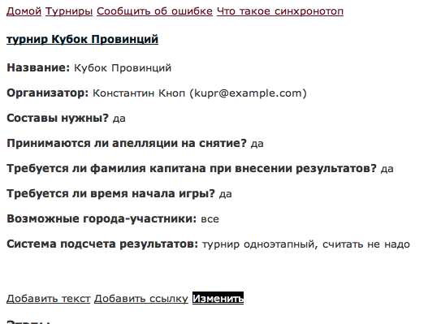
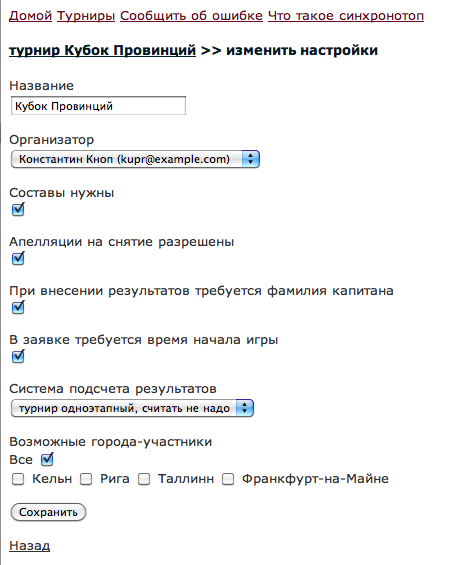

Если вы еще не зарегистрировались - сделайте это.
Напишите письмо администратору (sinhronotop@googlemail.com) с просьбой создать страницу нового турнира и информацией о нем.
Администратор создаст страницу турнира и пришлет вам ссылку на нее. Отныне у вас статус организатора этого турнира.
Пойдите по ссылке и проверьте параметры турнира. Если нужно изменить некоторые из них, нажмите на "изменить". 
Откроется страница, где параметры можно изменить. Обратите особое внимание на список городов - только указанные вами города смогут зарегистрироваться на этапы турнира. Если вы проводите всемирный синхрон, выберите опцию "все". После этого нажмите на "сохранить". 
Вы также можете добавить информацию о турнире, нажав на "добавить текст" на странице турнира. На открывшейся странице можно написать о турнире пару слов и нажать "сохранить". Аналогичным образом можно добавлять ссылки - например на официальный сайт турнира. Тексты и ссылку можно потом редактировать или удалять.
Готово! Теперь настройки турнира соотвтствуют вашим потребностям.